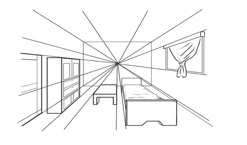
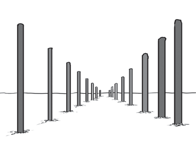

Picha zinazoonesha umbali
Kuchora picha zinazoonesha umbali kunahitaji mbinu mbalimbali za matumizi ya mistari, uwiano, na uelekeo wa mchoraji. Ili kuchora picha inayoonesha umbali, ni muhimu kuzingatia; matumizi ya mistari, uwiano na uelekeo wa mchoraji. Picha zilizoko kwenye Vielelezo namba 18 na 19 zinaonesha muonekano wa umbali. Chunguza matumizi ya mstari unaoonesha umbali katika picha hizo.



Kazi ya kufanya namba 12
Chora mchoro utakaoonesha vitu vya mbali na vya karibu. Chagua uelekeo mmoja ambapo mistari itakutana.